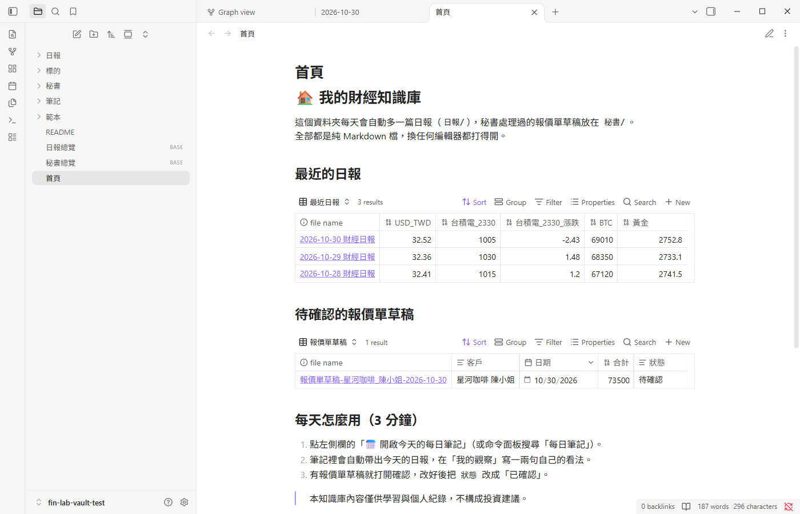
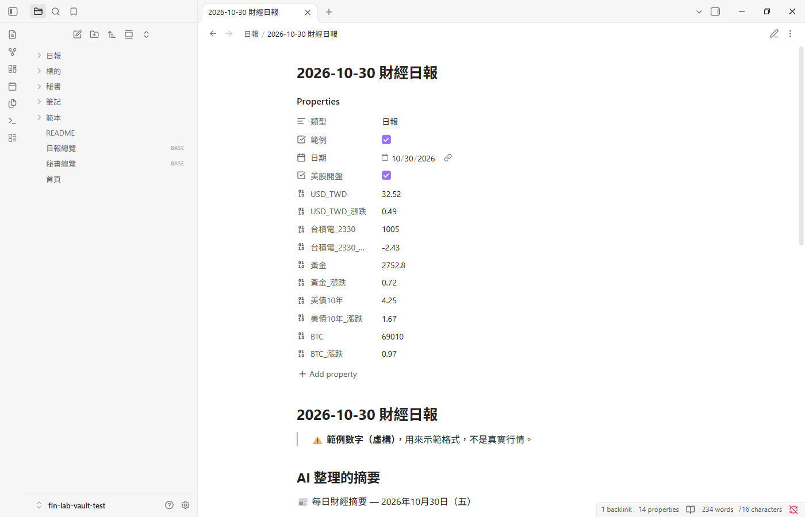
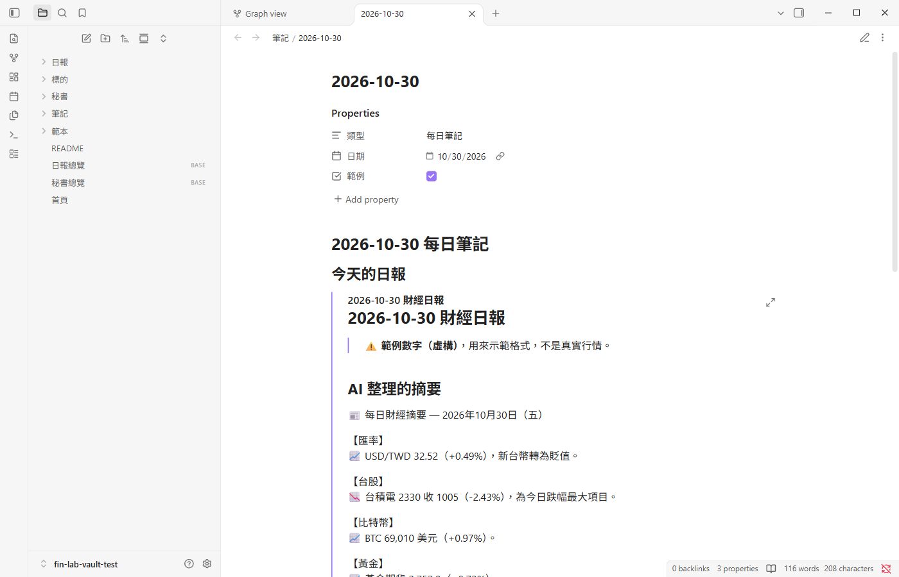
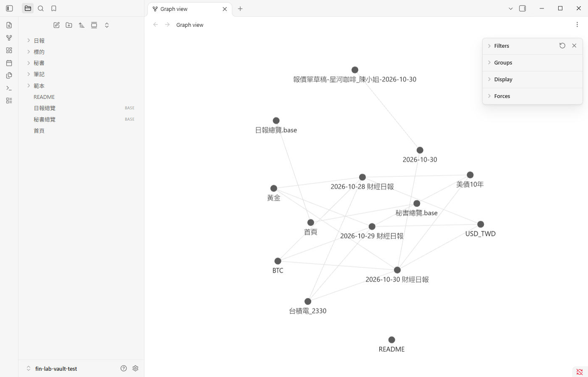

← 回主手冊
特別報導 · Stage 3
Markdown 知識庫 × Obsidian
一句話：核心是「一個裝滿 .md 檔的資料夾」，Obsidian 只是打開它最順手的工具。
🧭
為什麼放這頁：學員常問「用 Obsidian 會不會被綁住？」——答案是很難被綁住，因為內容就是一般的文字檔。這頁說明我們怎麼選工具、怎麼確認資料帶得走。
對應 repo：lab-assets/obsidian-vault/
SPECIAL REPORT · 2026-10-31
講義：Stage 3 Lab
「資料夾＋檢視器」：兩層分開，就不怕被綁
資料層：Apps Script 每天把日報寫成 日報/2026-10-30 財經日報.md，存在你自己的 Google 雲端硬碟 FinLab-Vault。
檢視層：用 Google 雲端硬碟電腦版同步到電腦，再用 Obsidian 打開——儀表板、每日筆記、關聯圖都是 Obsidian 幫你「看」的方式。
哪天不想用 Obsidian 了，資料夾原封不動，換一個編輯器照樣打得開。
① 資料怎麼流進知識庫
Apps Script每天 08:00 寄日報→
雲端硬碟 FinLab-Vault同時存一份 .md→
雲端硬碟電腦版同步到你的電腦→
Obsidian或任何文字編輯器
數字不經過 AI：每篇日報最上面的 frontmatter（例如 USD_TWD: 32.52）由程式從資料表直接寫入，AI 只寫中間那段摘要文字。報價單的金額也一樣，由「報價表」計算。
② 鎖定程度比較
依「會不會被單一軟體綁住」與「商務人士好不好上手」整理。免費與授權條件以各家官網為準（查證日期 2026-10-31）。
| 工具 | 檔案格式 | 費用 | 上手難度 | 適合本課程 | 我們的判斷 |
|---|
| 純 Markdown 資料夾 | 純 .md | 免費 | — | 核心 | 資料層本身。零綁定，任何工具都能打開。 |
| Obsidian（推薦檢視器） | 純 .md＋少數自家檔（.base） | 個人與商用皆免費（2025 起）；Sync／Publish 付費但用不到 | 低 | ★★★★★ | 繁中介面；每日筆記、範本、Bases 儀表板、關聯圖都是內建核心外掛，不用裝社群外掛。 |
| VS Code | 任何文字檔 | 免費 | 中高 | ★★☆☆☆ | 可以打開同一個資料夾，但介面偏工程師。 |
| Typora | 純 .md | 付費（一次買斷） | 低 | ★★☆☆☆ | 所見即所得很好用，但要付費，且沒有儀表板與關聯圖。 |
③ 為什麼推薦 Obsidian 給商務人士
免費
不用付費、不用訂閱
個人與商業使用都免費（以官網為準）。官方的同步服務要付費，但我們用 Google 雲端硬碟同步，用不到。
Windows 安裝在使用者目錄，通常不需要管理員權限
內建就夠
不裝社群外掛也能做儀表板
核心外掛 Bases 把每篇日報的 frontmatter 排成一張表；每日筆記＋範本一鍵帶出當天日報；關聯圖看標的出現在哪幾天。
少裝外掛＝少一份資安疑慮
生態
教學資源最多、介面有繁中
卡住時搜得到中文教學；設定 → 一般 → 語言可切換繁體中文。有手機 app，日後想延伸也方便。
課堂截圖為英文介面，選單位置相同
④ 3 分鐘上手
- 到 obsidian.md 下載安裝；同時安裝「Google 雲端硬碟電腦版」並登入同一個 Google 帳號。
- 在雲端硬碟電腦版把
FinLab-Vault 設成「可離線使用」（或用鏡像模式），確保檔案真的在電腦上。
- Obsidian →「開啟資料夾作為 vault」→ 選
我的雲端硬碟/FinLab-Vault。
- 打開
首頁：上方是最近日報的表格，下方是待確認的報價單草稿。
- 點左側欄「開啟今天的每日筆記」，在「我的觀察」寫一兩句自己的看法——這段是你寫的，不是 AI 寫的。

首頁：Bases 表格自動列出最近日報的數字與報價單狀態。

一篇日報：上方 Properties 就是程式寫入的數字，下面才是 AI 摘要。

每日筆記：範本自動嵌入當天日報，你只要寫觀察與待辦。

關聯圖：日報用 [[連結]] 指向標的筆記，自動長成一張網。
截圖為範例 vault，數字與客戶皆為虛構。
⑤ 換一個編輯器也打得開
課堂上做一次小實驗，親眼確認資料沒被綁住：
用記事本打開一篇日報
在檔案總管找到 FinLab-Vault/日報/，對任一篇按右鍵 → 開啟檔案 → 記事本。你會看到：
- 最上面
--- 之間是數字（frontmatter） - 中間是 AI 摘要的純文字
- 下面是原始數據表格
內容完整、看得懂＝資料帶得走
哪些是 Obsidian 專屬？
.base 儀表板檔與 [[連結]] 的「點了會跳頁」效果，是 Obsidian 的呈現方式。拿掉它們，日報、筆記、報價單的內容一個字都不少。
VS Code、Typora、記事本也都能讀這些 .md
範例 vault 的結構
首頁.md、日報/、秘書/、筆記/、標的/、範本/，加上 .obsidian/ 裡三個小設定檔（每日筆記資料夾、範本資料夾、關聯圖篩選）。
完整說明：lab-assets/obsidian-vault/README.md
⑥ 選修：在 vault 裡問 AI
主線不需要——AI 已經在 Apps Script 裡做完整理。想問「這週匯率怎麼變」這類跨多天的問題，再考慮下面兩條路。
免費路線
Copilot 外掛＋OpenRouter 免費 key
社群外掛 Copilot 可以接 OpenRouter，用你在 Stage 2 申請的同一把 key、選 :free 結尾的免費模型（免費額度共用，以官網為準）。
⚠️ 外掛會把 key 存在 .obsidian/plugins/ 裡，分享 vault 前要先刪掉這個資料夾
已有訂閱
Claude Panel（需 Claude 訂閱）
已經有 Claude 訂閱的人，可以用 Claude Panel 外掛，搭配「只根據 vault 內容回答、找不到就說沒有」的規則檔。
做法可參考姊妹課程 low-code-rag-lab 的 obsidian/
規則不變
AI 一樣不能補數字
不論用哪個外掛，都要求它只引用 vault 裡的筆記、標出處、不給投資建議。看到沒出處的數字，就當它不存在。